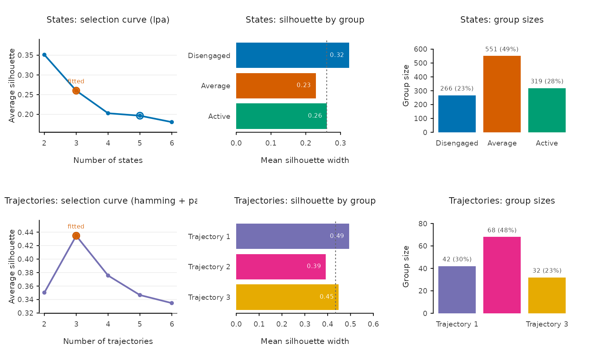
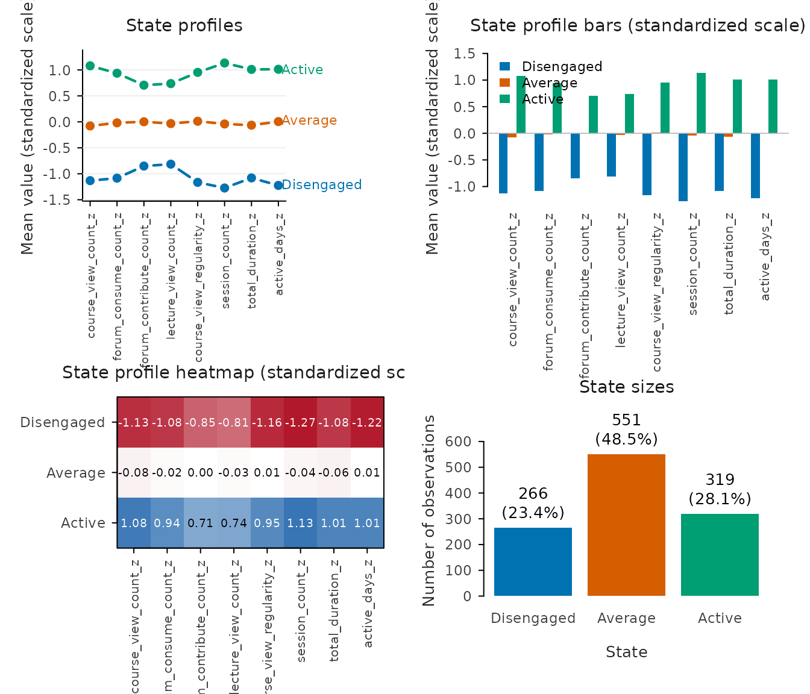
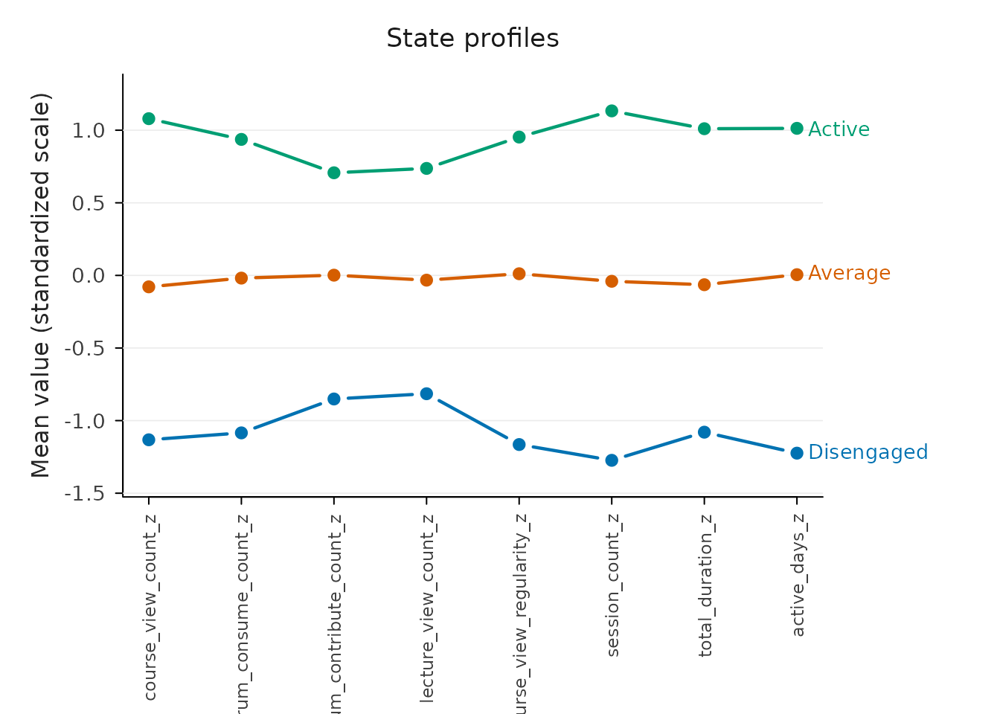
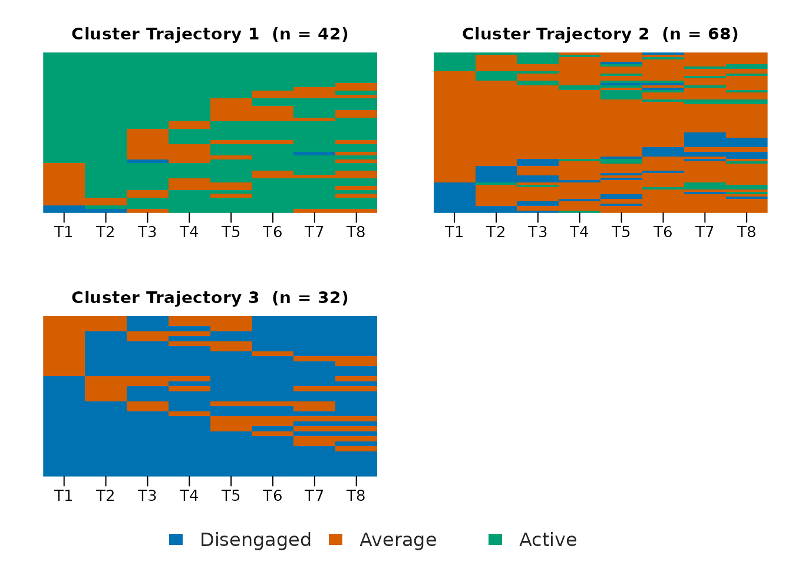
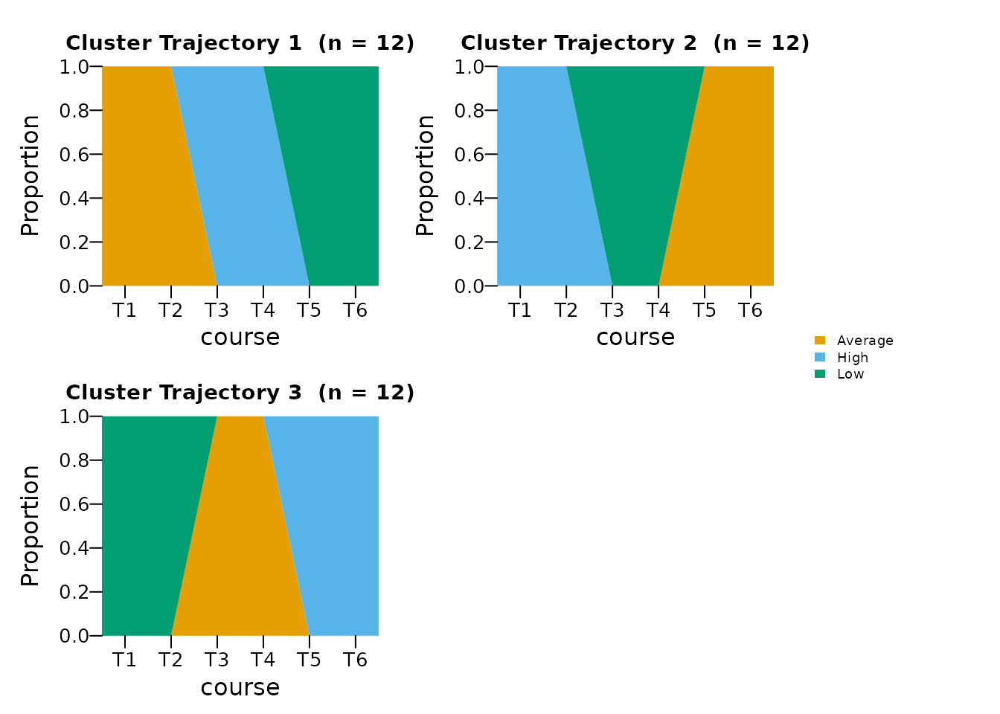
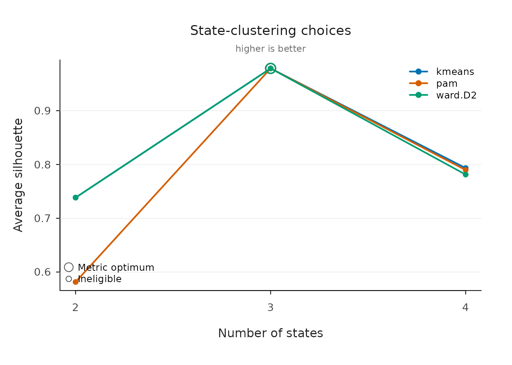
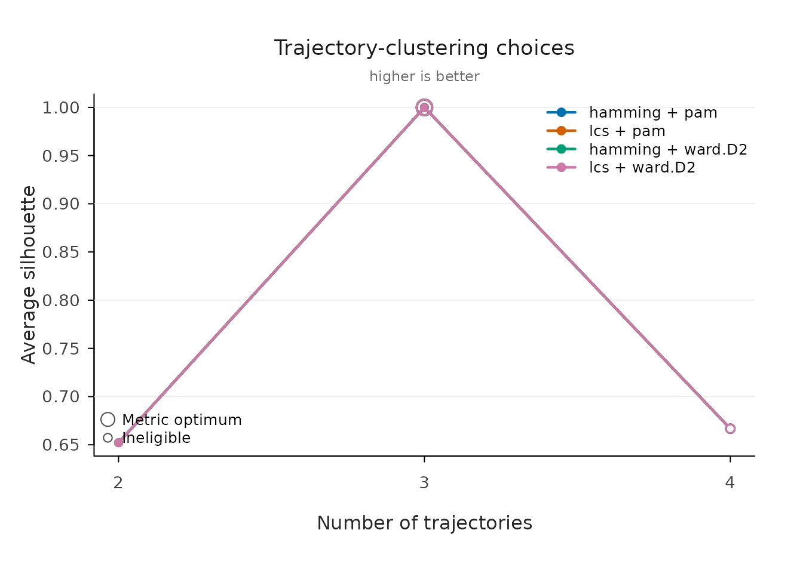

VaSSTra turns repeated multivariate measurements into states, state sequences, and groups of similar trajectories. The whole analysis is one call, and every part of it can also be run as an explicit step.
This guide uses the built-in engagement data: 142
students measured on eight indicators at eight course positions, from
the VaSSTra
chapter of Learning Analytics Methods and Tutorials. It
ships analysis-ready with attached role metadata, so no column plumbing
is needed.
Using your own data
vasstra() needs three roles: the
subject (id), the time
column (time), and the numeric indicators
(variables). The engagement data carry these
as attached metadata, so they are found automatically; your own data
frame will not, so you name the subject and time columns. On
engagement this is redundant, but it is exactly the call
you would write for data with different column names:
fit <- vasstra(
engagement,
id = "user_id", # one row per subject and time point
time = "sequence_position", # the ordering column
state_labels = c("Disengaged", "Average", "Active")
)
#> Using n_states = 3 to match the supplied labels.
#> Selected n_trajectories = 3 (hamming + pam, silhouette = 0.435); see `diagnostics$selection`.variables was left out on purpose: the numeric columns
that are not the id or time become the
indicators (columns ending in "_z" are preferred when
present, so a mix of raw and standardized columns picks the standardized
set, as it does here). Name them to fit a specific subset. Here we keep
only the three activity-volume indicators:
fit <- vasstra(
engagement,
id = "user_id",
time = "sequence_position",
variables = c("session_count_z", "total_duration_z", "active_days_z"),
state_labels = c("Disengaged", "Average", "Active")
)
#> Using n_states = 3 to match the supplied labels.
#> Selected n_trajectories = 3 (hamming + pam, silhouette = 0.422); see `diagnostics$selection`.Columns that follow a common convention are detected even without
id and time (id: id,
student, subject, actor, …;
time: time, week,
wave, session, …); anything else raises a
clear error asking you to supply that role. Two more notes: pass
time_levels when time is a character or
unordered factor so the chronology is explicit, and use
state instead of variables when the data
already carry a categorical state column (the analysis then starts at
step2_sequences()).
One call
vasstra() detects the subject, time, and indicator roles
from the attached role metadata (or common column names), compares two
through six states and trajectories, and fits the recommended counts.
Every automated decision is reported as it is made and recorded inside
the fit. Here three state labels fix three states; omit them and the
state count is selected too.
fit <- vasstra(engagement, state_labels = c("Disengaged", "Average", "Active"))
#> Using n_states = 3 to match the supplied labels.
#> Selected n_trajectories = 3 (hamming + pam, silhouette = 0.435); see `diagnostics$selection`.
fit
#> VaSSTra Analysis
#> 142 subjects | 8 times | 3 states | 3 trajectories
#> hamming + pam | silhouette 0.435Name any decision to take it over; automation only fills what you
omit. Labels are the shortest way to fix a count (three labels mean
three states), and a candidate vector such as
n_states = 2:4 compares exactly those counts and fits the
recommended one. Two more arguments control how states display
everywhere: state_order fixes the order states appear in
across every plot, and state_colors sets a state palette
that is stored on the fit and reused by every plot.
Evaluate the clustering
evaluate() compares the fitted numbers of states and
trajectories against the alternative counts and reports per-cluster
quality. Printing shows both tables; plotting draws the selection curve,
per-cluster silhouette widths, and group sizes.
evaluation <- evaluate(fit)
plot(evaluation)
The same verb works on a single step, with any candidate range:
Tidy fit indices
fit_indices() reports the fit statistics of the selected
clustering as one tidy row, or one row per compared candidate with
compare = TRUE. LPA models report the complete
information-criterion family together with entropy and the extreme
average posterior class probabilities; hard-clustering methods report
their own objectives instead, and columns that do not apply are
dropped.
fit_indices(fit)
#> VaSSTra fit indices: states (lpa)
#> n_states method lpa_model log_likelihood n_parameters aic bic sabic caic
#> 3 lpa EEI -9940 34 19949 20120 20012 20154
#> awe clc kic icl entropy prob_min prob_max silhouette min_size max_size
#> 20461 20145 19986 20384 0.89 0.94 0.96 0.26 266 551
#> size_ratio
#> 2.1
fit_indices(fit, compare = TRUE)
#> VaSSTra fit indices: states (lpa)
#> n_states method lpa_model log_likelihood n_parameters aic bic sabic caic
#> 2 lpa EEI -10752 25 21553 21679 21600 21704
#> 3 lpa EEI -9940 34 19949 20120 20012 20154
#> 4 lpa EEI -9530 43 19146 19362 19226 19405
#> 5 lpa EEI -9322 52 18747 19009 18844 19061
#> 6 lpa EEI -9086 61 18294 18601 18407 18662
#> awe clc kic icl entropy prob_min prob_max silhouette min_size max_size
#> 21930 21655 21581 21831 0.90 0.97 0.97 0.35 509 627
#> 20461 20145 19986 20384 0.89 0.94 0.96 0.26 266 551
#> 19794 19398 19192 19700 0.89 0.93 0.97 0.20 152 414
#> 19531 19114 18802 19480 0.87 0.87 0.96 0.20 155 367
#> 19213 18633 18358 19062 0.89 0.88 0.97 0.18 33 350
#> size_ratio eligible best fitted
#> 1.2 TRUE FALSE FALSE
#> 2.1 TRUE FALSE TRUE
#> 2.7 TRUE FALSE FALSE
#> 2.4 TRUE TRUE FALSE
#> 10.6 FALSE FALSE FALSE
fit_indices(fit, step = "trajectories", compare = TRUE)
#> VaSSTra fit indices: trajectories (hamming + pam)
#> n_trajectories dissimilarity method silhouette mean_within_distance min_size
#> 2 hamming pam 0.35 4.0 47
#> 3 hamming pam 0.43 3.0 32
#> 4 hamming pam 0.38 2.8 15
#> 5 hamming pam 0.35 2.7 15
#> 6 hamming pam 0.34 2.5 12
#> max_size size_ratio eligible best fitted
#> 95 2.0 TRUE FALSE FALSE
#> 68 2.1 TRUE TRUE TRUE
#> 59 3.9 TRUE FALSE FALSE
#> 54 3.6 TRUE FALSE FALSE
#> 40 3.3 TRUE FALSE FALSEName groups after inspecting them
set_labels() renames fitted states or trajectories in
place (nothing is refitted, no value changes), and the new names flow
through every table, sequence, and plot. Rename everything with a full
vector, or only some groups by name.
fit <- set_labels(
fit,
trajectories = c("Mostly active", "Mostly average", "Mostly disengaged")
)
summary(fit)
#> trajectory n proportion mean_within_distance n_observed unique_states
#> 1 Mostly active 42 0.30 2.9 8 1.9
#> 2 Mostly average 68 0.48 3.1 8 2.0
#> 3 Mostly disengaged 32 0.23 3.0 8 1.8
#> transitions entropy complexity volatility integrative_potential
#> 1 1.9 0.42 0.33 0.45 NaN
#> 2 2.2 0.46 0.37 0.49 NaN
#> 3 2.1 0.43 0.35 0.45 NaN
#> negative_exposure
#> 1 NaN
#> 2 NaN
#> 3 NaNThe same analysis in four explicit steps
Each step accepts the result of the previous step and also runs alone with the same automated defaults. Use the steps when intermediate results are needed, or when states come from another method.
states <- step1_states(engagement,
labels = c("Disengaged", "Average", "Active"))
#> Using n_states = 3 to match the supplied labels.
sequences <- step2_sequences(states)
trajectories <- step3_trajectories(sequences, n_trajectories = 3)
description <- step4_describe(
trajectories,
positive_states = "Active",
negative_states = "Disengaged"
)
summary(description)
#> trajectory n proportion mean_within_distance n_observed unique_states
#> 1 Trajectory 1 42 0.30 2.9 8 1.9
#> 2 Trajectory 2 68 0.48 3.1 8 2.0
#> 3 Trajectory 3 32 0.23 3.0 8 1.8
#> transitions entropy complexity volatility integrative_potential
#> 1 1.9 0.42 0.33 0.45 0.76
#> 2 2.2 0.46 0.37 0.49 0.12
#> 3 2.1 0.43 0.35 0.45 0.00
#> negative_exposure
#> 1 0.0093
#> 2 0.1185
#> 3 0.7665Existing states from LPA, LCA, or any other source enter at step 2:
pass a data frame whose state column is detected automatically (or named
with the state argument).
State plots
State results support profile, bar, heatmap, and size plots without adding a plotting dependency, plus a combined overview.
plot(states, type = "all")
plot(states, type = "profile")
Sequence and trajectory plots
Every plot containing state sequences is rendered by Nestimate:
plot(trajectories, type = "index")
plot(trajectories, type = "distribution")
Compare candidates in full detail
When automation should be replaced by an explicit comparison,
state_choices() and trajectory_choices() fit a
grid across methods and counts and return one tidy row per candidate.
Nothing is selected silently; pass the inspected
candidate_id to fit.
state_options <- state_choices(
engagement,
n_states = 2:4,
method = c("kmeans", "pam", "ward.D2")
)
state_options
#> VaSSTra state choices
#> 9 candidates | 9 successful | 3 recommended
#> candidate_id n_states method lpa_model recommendation_criterion silhouette
#> 1 2 kmeans <NA> silhouette 0.35
#> 4 2 pam <NA> silhouette 0.35
#> 7 2 ward.D2 <NA> silhouette 0.33
#> bic min_size eligible
#> NA 519 TRUE
#> NA 543 TRUE
#> NA 483 TRUE
plot(state_options, metric = "silhouette")
chosen_states <- fit_state_choice(
state_options,
n_states = 3,
method = "kmeans",
labels = c("Disengaged", "Average", "Active")
)fit_state_choice(state_options) with no selection fits
the recommended candidate; candidate_id remains available
for exact row selection.
Average silhouette is the common diagnostic across all methods;
larger values indicate better-separated groups. Recommendations identify
the best eligible candidate separately for each method rather than
declaring one algorithm universally best. LPA candidates are recommended
by conventional BIC, with AIC, silhouette, or native mclust ICL
available through lpa_criterion.
trajectory_options <- trajectory_choices(
step2_sequences(chosen_states),
n_trajectories = 2:4,
dissimilarity = c("hamming", "lcs"),
method = c("pam", "ward.D2")
)
trajectory_options
#> VaSSTra trajectory choices (Nestimate)
#> 12 candidates | 4 recommended distance-method solutions
#> candidate_id n_trajectories dissimilarity method silhouette min_size eligible
#> 2 3 hamming pam 0.44 35 TRUE
#> 5 3 lcs pam 0.53 27 TRUE
#> 8 3 hamming ward.D2 0.39 33 TRUE
#> 11 3 lcs ward.D2 0.47 40 TRUE
plot(trajectory_options, metric = "silhouette")
Recommendations are made within each distance-method pair because mean within-trajectory distances are only comparable within one dissimilarity.
States default to mclust latent profiles
("EEI", tidyLPA model 1); base R supplies k-means and
hierarchical clustering, cluster supplies PAM, CLARA,
FANNY, and DIANA, and Nestimate supplies sequence
distances, trajectory clustering, and plots. No TraMineR
plotting path or dependency is required. See
vignette("clustering-algorithms") for the full list of
state and trajectory methods.